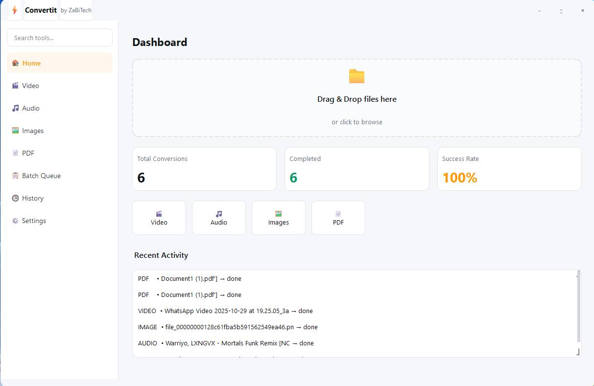
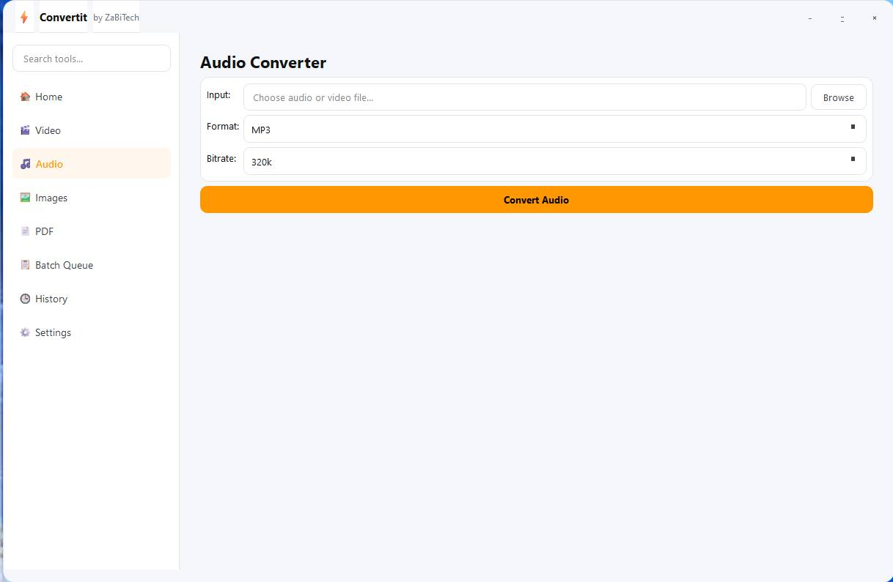
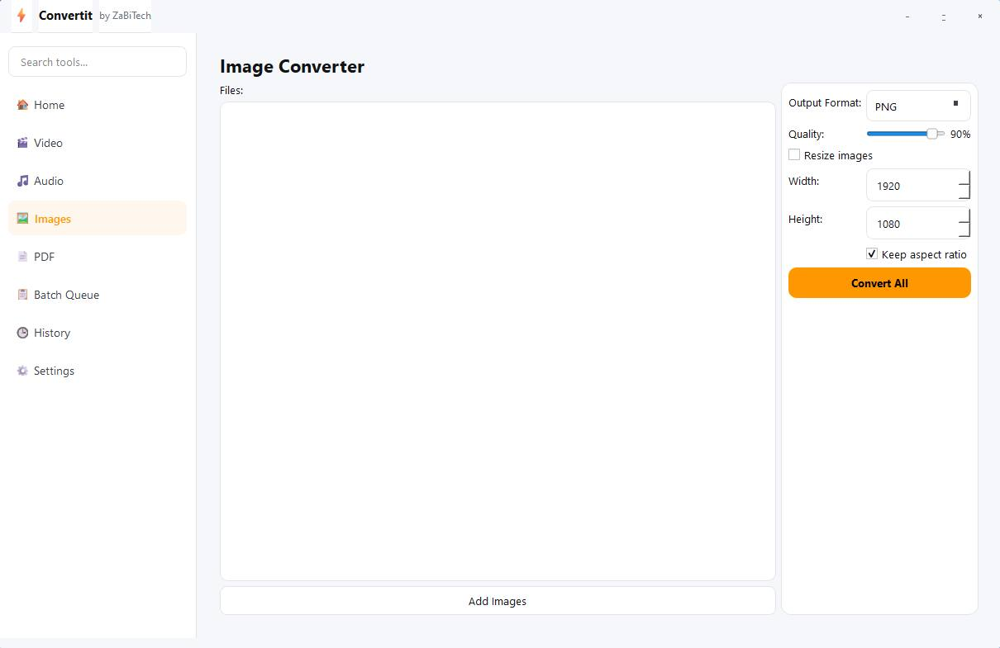

Designed after real screenshots from Convertit 1.0
Drag-and-drop files, see total conversions, completed jobs and success rate at a glance. Recent activity shows every conversion with type and status.


Choose input, output folder, format (MP4, MKV, AVI, MOV, WEBM, GIF), codec (libx264, libx265, libvpx-vp9), quality (High, Balanced, Small) and resolution (original to 4K). Real-time log shows FFmpeg progress.
Extract audio from video or convert between formats. Supports MP3, WAV, AAC, FLAC, OGG, M4A with bitrates from 96k to 320k.

Add hundreds of images, choose PNG, JPG, WEBP output, adjust quality slider, resize by width/height, keep aspect ratio. Perfect for photographers and designers.